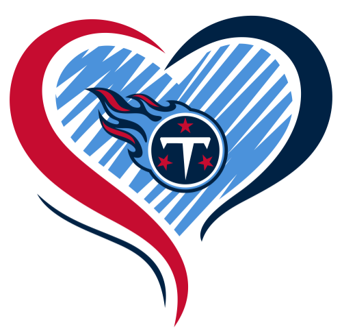
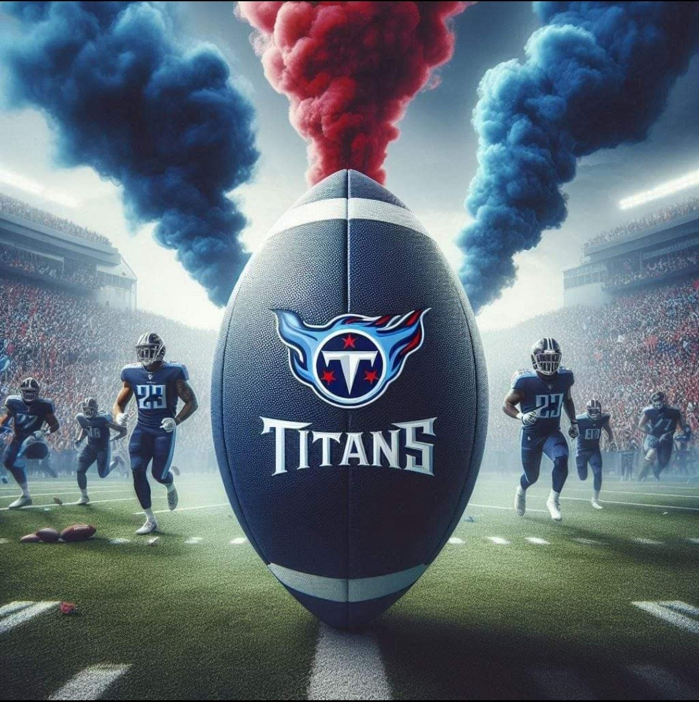

2024 Schedule:Titan UP!!!!
Tennessee Titans Schedule
Week 1:
Titans vs. Saints – Home Date: September 8, 2024
Week 2:
Titans at Jaguars – Away Date: September 15, 2024
Week 3:
Titans vs. Steelers – Home Date: September 22, 2024
Week 4:
Titans at Colts – Away Date: September 29, 2024
Week 5:
Titans vs. Ravens – Home Date: October 6, 2024
Week 6:
Titans at Browns – Away Date: October 13, 2024
Week 7:
Titans vs. Texans – Home Date: October 20, 2024
Week 8:
Titans at Chiefs – Away Date: October 27, 2024
Week 9:
Titans vs. Panthers – Home Date: November 3, 2024
Week 10:
Titans at Dolphins – Away Date: November 10, 2024
Week 11:
Titans vs. Bengals – Home Date: November 17, 2024
Week 12:
Titans at Raiders – Away Date: November 24, 2024
Week 13:
Titans vs. Chargers – Home Date: December 1, 2024
Week 14:
Titans at Broncos – Away Date: December 8, 2024
Week 15:
Titans vs. Patriots – Home Date: December 15, 2024
Week 16:
Titans at Bills – Away Date: December 22, 2024
Week 17:
Titans vs. Eagles – Home Date: December 29, 2024
Week 18:
Titans at Texans – Away Date: January 5, 2025
Location and Ticket Information
Stadium Info: Nissan Stadium
Nissan Stadium, located in downtown Nashville, serves as the home of the Tennessee Titans. The stadium has a seating capacity of approximately 69,143, offering a great view from every angle. There are multiple parking lots around the stadium, but it's advised to arrive early as spots fill up quickly, especially for tailgating.
- Parking: Parking passes can be purchased online, and lots open up to four hours before kickoff. Tailgating is allowed in specific lots, with food, games, and a lively atmosphere.
- Tailgating: Titans fans are known for their enthusiastic tailgating, with grilling, games, and live music often filling the lots. Tailgating lots open four hours before the game.
- Seating: Nissan Stadium offers a variety of seating options, including lower-level, club-level, and suite seating. Accessible seating is available throughout the stadium.
Ticket Links
Get your tickets to watch the Tennessee Titans live! Tickets are available for each game, and you can purchase them through the official Titans website or trusted ticket platforms like:
Away Game Info
For fans traveling to see the Titans play on the road, here are some popular away game destinations and travel tips:
New Orleans Saints (Week 1) – Mercedes-Benz Superdome, New Orleans, LA
- Hotels: Stay near the French Quarter for easy access to the stadium and New Orleans’ famous nightlife.
- Attractions: Explore Bourbon Street, the French Quarter, and try local cuisine like beignets and jambalaya.
Kansas City Chiefs (Week 8) – Arrowhead Stadium, Kansas City, MO
- Hotels: Look for accommodations near downtown Kansas City or close to Arrowhead Stadium for game day convenience.
- Attractions: Visit the National WWI Museum and Memorial, or enjoy some Kansas City barbecue.
Philadelphia Eagles (Week 17) – Lincoln Financial Field, Philadelphia, PA
- Hotels: Consider staying in Center City for quick access to both the stadium and popular sites like Independence Hall.
- Attractions: Explore historic landmarks, including the Liberty Bell and the Philadelphia Museum of Art.